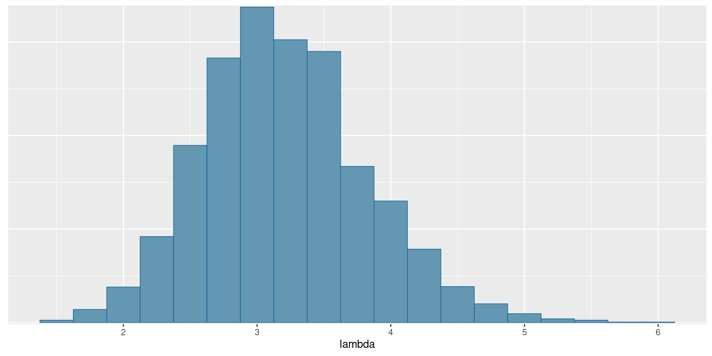
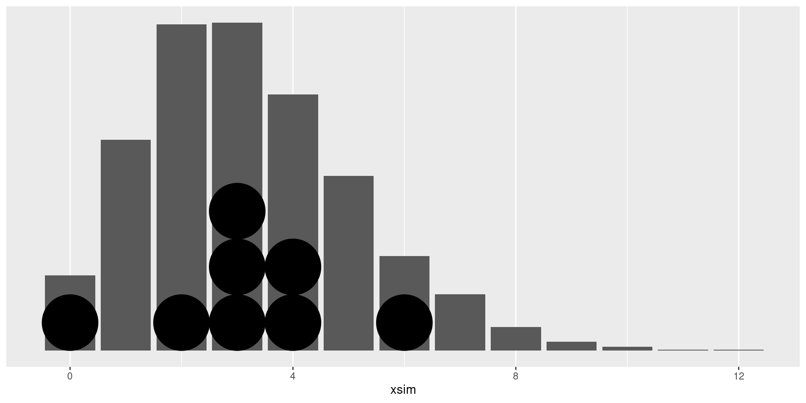
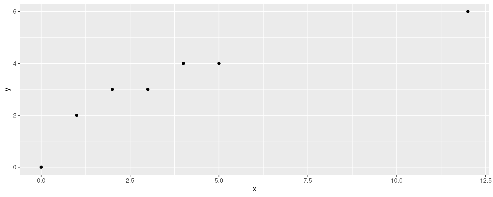
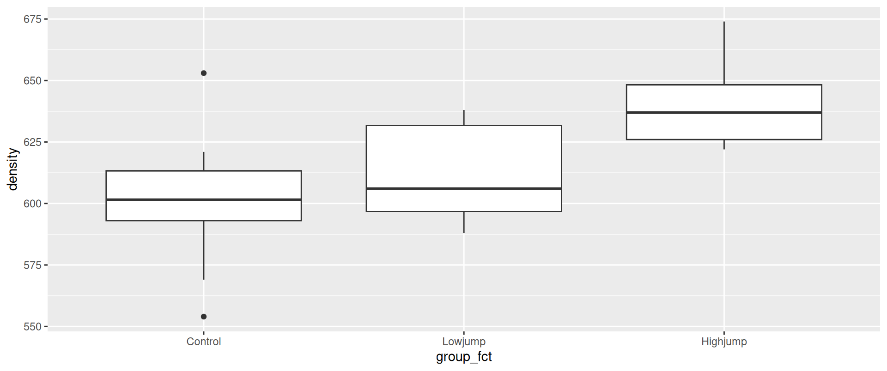
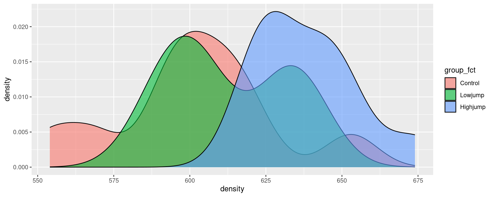
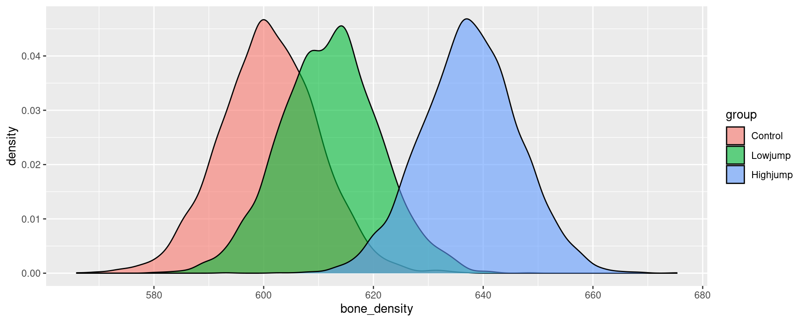
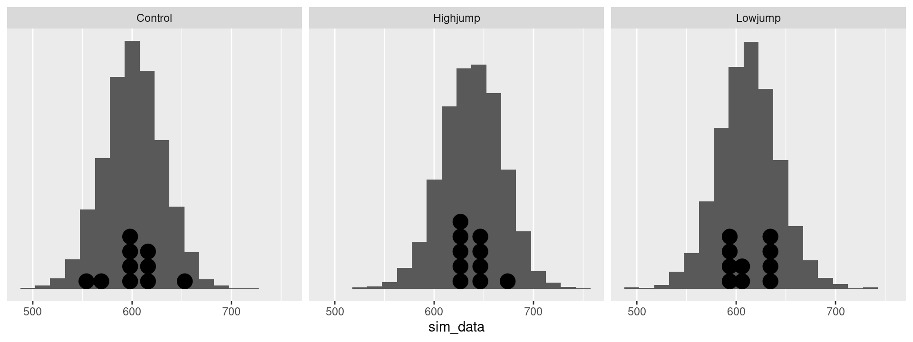

Bayesian Statistics with Stan
Packages for this section
Installation instructions for the last three of these are below.
Installation 1/2
cmdstanr:
posteriorandbayesplot, from the same place:
Installation 2/2
Then, to check that you have the C++ stuff needed to compile Stan code:
and then:
If you happen to know how many cores (processors) your computer has, insert the appropriate number. (My laptop has 4 and my desktop 6.)
All of this is done once. If you have problems, go here (link).
Bayesian and frequentist inference 1/2
- The inference philosophy that we have learned so far says that:
- parameters to be estimated are fixed but unknown
- Data random; if we took another sample we’d get different data.
- This is called “frequentist” or “repeated-sampling” inference.
Bayesian and frequentist inference 2/2
- Bayesian inference says:
- parameters are random, data is given
- Ingredients:
- prior distribution: distribution of parameters before seeing data.
- likelihood: model for data if the parameters are known
- posterior distribution: distribution of parameters after seeing data.
Distribution of parameters
- Instead of having a point or interval estimate of a parameter, we have an entire distribution
- so in Bayesian statistics we can talk about eg.
- probability that a parameter is bigger than some value
- probability that a parameter is close to some value
- probability that one parameter is bigger than another
- Name comes from Bayes’ Theorem, which here says
posterior is proportional to likelihood times prior
- more discussion about this is in a blog post.
An example
- Suppose we have these (integer) observations:
- Suppose we believe that these come from a Poisson distribution with a mean \(\lambda\) that we want to estimate.
- We need a prior distribution for \(\lambda\). I will (for some reason) take a \(Weibull\) distribution with parameters 1.1 and 6, that has quartiles 2 and 6. Normally this would come from your knowledge of the data-generating process.
- The Poisson likelihood can be written down (see over).
Some algebra
- We have \(n=8\) observations \(x_i\), so the Poisson likelihood is proportional to
\[ \prod_{i=1}^n e^{-\lambda} \lambda^{x_i} = e^{-n\lambda} \lambda^S, \] where \(S=\sum_{i=1}^n x_i\).
- then you write the Weibull prior density (as a function of \(\lambda\)):
\[ C (\lambda/6)^{0.1} e^{-(\lambda/6)^{1.1}} \] where \(C\) is a constant.
- and then you multiply these together and try to recognize the distributional form. Only, here you can’t. The powers 0.1 and 1.1 get in the way.
Sampling from the posterior distribution
Wouldn’t it be nice if we could just sample from the posterior distribution? Then we would be able to compute it as accurately as we want.
Metropolis and Hastings: devise a Markov chain (C62) whose limiting distribution is the posterior you want, and then sample from that Markov chain (easy), allowing enough time to get close enough to the limiting distribution.
Stan: uses a modern variant that is more efficient (called Hamiltonian Monte Carlo), implemented in R packages
cmdstanr.Write Stan code in a file, compile it and sample from it.
Components of Stan code: the model
model {
// likelihood
x ~ poisson(lambda);
}This is how you say “\(X\) has a Poisson distribution with mean \(\lambda\)”. Note that lines of Stan code have semicolons on the end.
Components of Stan code: the prior distribution
model {
// prior
lambda ~ weibull(1.1, 6);
// likelihood
x ~ poisson(lambda);
}Components of Stan code: data and parameters
- first in the Stan code:
data {
array[8] int x;
}
parameters {
real<lower=0> lambda;
}Compile and sample from the model 1/2
- compile
Compile and sample from the model 2/2
- set up data
- sample
Running MCMC with 4 sequential chains...
Chain 1 Iteration: 1 / 2000 [ 0%] (Warmup)
Chain 1 Iteration: 100 / 2000 [ 5%] (Warmup)
Chain 1 Iteration: 200 / 2000 [ 10%] (Warmup)
Chain 1 Iteration: 300 / 2000 [ 15%] (Warmup)
Chain 1 Iteration: 400 / 2000 [ 20%] (Warmup)
Chain 1 Iteration: 500 / 2000 [ 25%] (Warmup)
Chain 1 Iteration: 600 / 2000 [ 30%] (Warmup)
Chain 1 Iteration: 700 / 2000 [ 35%] (Warmup)
Chain 1 Iteration: 800 / 2000 [ 40%] (Warmup)
Chain 1 Iteration: 900 / 2000 [ 45%] (Warmup)
Chain 1 Iteration: 1000 / 2000 [ 50%] (Warmup)
Chain 1 Iteration: 1001 / 2000 [ 50%] (Sampling)
Chain 1 Iteration: 1100 / 2000 [ 55%] (Sampling)
Chain 1 Iteration: 1200 / 2000 [ 60%] (Sampling)
Chain 1 Iteration: 1300 / 2000 [ 65%] (Sampling)
Chain 1 Iteration: 1400 / 2000 [ 70%] (Sampling)
Chain 1 Iteration: 1500 / 2000 [ 75%] (Sampling)
Chain 1 Iteration: 1600 / 2000 [ 80%] (Sampling)
Chain 1 Iteration: 1700 / 2000 [ 85%] (Sampling)
Chain 1 Iteration: 1800 / 2000 [ 90%] (Sampling)
Chain 1 Iteration: 1900 / 2000 [ 95%] (Sampling)
Chain 1 Iteration: 2000 / 2000 [100%] (Sampling)
Chain 1 finished in 0.0 seconds.
Chain 2 Iteration: 1 / 2000 [ 0%] (Warmup)
Chain 2 Iteration: 100 / 2000 [ 5%] (Warmup)
Chain 2 Iteration: 200 / 2000 [ 10%] (Warmup)
Chain 2 Iteration: 300 / 2000 [ 15%] (Warmup)
Chain 2 Iteration: 400 / 2000 [ 20%] (Warmup)
Chain 2 Iteration: 500 / 2000 [ 25%] (Warmup)
Chain 2 Iteration: 600 / 2000 [ 30%] (Warmup)
Chain 2 Iteration: 700 / 2000 [ 35%] (Warmup)
Chain 2 Iteration: 800 / 2000 [ 40%] (Warmup)
Chain 2 Iteration: 900 / 2000 [ 45%] (Warmup)
Chain 2 Iteration: 1000 / 2000 [ 50%] (Warmup)
Chain 2 Iteration: 1001 / 2000 [ 50%] (Sampling)
Chain 2 Iteration: 1100 / 2000 [ 55%] (Sampling)
Chain 2 Iteration: 1200 / 2000 [ 60%] (Sampling)
Chain 2 Iteration: 1300 / 2000 [ 65%] (Sampling)
Chain 2 Iteration: 1400 / 2000 [ 70%] (Sampling)
Chain 2 Iteration: 1500 / 2000 [ 75%] (Sampling)
Chain 2 Iteration: 1600 / 2000 [ 80%] (Sampling)
Chain 2 Iteration: 1700 / 2000 [ 85%] (Sampling)
Chain 2 Iteration: 1800 / 2000 [ 90%] (Sampling)
Chain 2 Iteration: 1900 / 2000 [ 95%] (Sampling)
Chain 2 Iteration: 2000 / 2000 [100%] (Sampling)
Chain 2 finished in 0.0 seconds.
Chain 3 Iteration: 1 / 2000 [ 0%] (Warmup)
Chain 3 Iteration: 100 / 2000 [ 5%] (Warmup)
Chain 3 Iteration: 200 / 2000 [ 10%] (Warmup)
Chain 3 Iteration: 300 / 2000 [ 15%] (Warmup)
Chain 3 Iteration: 400 / 2000 [ 20%] (Warmup)
Chain 3 Iteration: 500 / 2000 [ 25%] (Warmup)
Chain 3 Iteration: 600 / 2000 [ 30%] (Warmup)
Chain 3 Iteration: 700 / 2000 [ 35%] (Warmup)
Chain 3 Iteration: 800 / 2000 [ 40%] (Warmup)
Chain 3 Iteration: 900 / 2000 [ 45%] (Warmup)
Chain 3 Iteration: 1000 / 2000 [ 50%] (Warmup)
Chain 3 Iteration: 1001 / 2000 [ 50%] (Sampling)
Chain 3 Iteration: 1100 / 2000 [ 55%] (Sampling)
Chain 3 Iteration: 1200 / 2000 [ 60%] (Sampling)
Chain 3 Iteration: 1300 / 2000 [ 65%] (Sampling)
Chain 3 Iteration: 1400 / 2000 [ 70%] (Sampling)
Chain 3 Iteration: 1500 / 2000 [ 75%] (Sampling)
Chain 3 Iteration: 1600 / 2000 [ 80%] (Sampling)
Chain 3 Iteration: 1700 / 2000 [ 85%] (Sampling)
Chain 3 Iteration: 1800 / 2000 [ 90%] (Sampling)
Chain 3 Iteration: 1900 / 2000 [ 95%] (Sampling)
Chain 3 Iteration: 2000 / 2000 [100%] (Sampling)
Chain 3 finished in 0.0 seconds.
Chain 4 Iteration: 1 / 2000 [ 0%] (Warmup)
Chain 4 Iteration: 100 / 2000 [ 5%] (Warmup)
Chain 4 Iteration: 200 / 2000 [ 10%] (Warmup)
Chain 4 Iteration: 300 / 2000 [ 15%] (Warmup)
Chain 4 Iteration: 400 / 2000 [ 20%] (Warmup)
Chain 4 Iteration: 500 / 2000 [ 25%] (Warmup)
Chain 4 Iteration: 600 / 2000 [ 30%] (Warmup)
Chain 4 Iteration: 700 / 2000 [ 35%] (Warmup)
Chain 4 Iteration: 800 / 2000 [ 40%] (Warmup)
Chain 4 Iteration: 900 / 2000 [ 45%] (Warmup)
Chain 4 Iteration: 1000 / 2000 [ 50%] (Warmup)
Chain 4 Iteration: 1001 / 2000 [ 50%] (Sampling)
Chain 4 Iteration: 1100 / 2000 [ 55%] (Sampling)
Chain 4 Iteration: 1200 / 2000 [ 60%] (Sampling)
Chain 4 Iteration: 1300 / 2000 [ 65%] (Sampling)
Chain 4 Iteration: 1400 / 2000 [ 70%] (Sampling)
Chain 4 Iteration: 1500 / 2000 [ 75%] (Sampling)
Chain 4 Iteration: 1600 / 2000 [ 80%] (Sampling)
Chain 4 Iteration: 1700 / 2000 [ 85%] (Sampling)
Chain 4 Iteration: 1800 / 2000 [ 90%] (Sampling)
Chain 4 Iteration: 1900 / 2000 [ 95%] (Sampling)
Chain 4 Iteration: 2000 / 2000 [100%] (Sampling)
Chain 4 finished in 0.0 seconds.
All 4 chains finished successfully.
Mean chain execution time: 0.0 seconds.
Total execution time: 0.8 seconds.The output
Making the code more general
- The coder in you is probably offended by hard-coding the sample size and the parameters of the prior distribution. More generally:
data {
int<lower=1> n;
real<lower=0> a;
real<lower=0> b;
array[n] int x;
}
...
model {
// prior
lambda ~ weibull(a, b);
// likelihood
x ~ poisson(lambda);
}Set up again and sample:
- Compile again:
- set up the data again including the new things we need:
Sample again
Output should be the same (to within randomness):
Picture of posterior
Extracting actual sampled values
A little awkward at first:
# A draws_array: 1000 iterations, 4 chains, and 2 variables
, , variable = lp__
chain
iteration 1 2 3 4
1 4.2 4.3 4.2 3.0
2 4.2 4.2 4.2 4.3
3 4.2 4.3 4.2 4.2
4 4.2 4.1 3.9 4.2
5 4.2 4.1 3.3 3.6
, , variable = lambda
chain
iteration 1 2 3 4
1 3.4 3.2 3.4 4.3
2 3.0 3.4 3.5 3.2
3 3.4 3.2 3.3 3.1
4 3.4 3.6 2.7 3.1
5 3.0 3.6 2.4 2.5
# ... with 995 more iterationsA 3-dimensional array. A dataframe would be much better.
Sampled values as dataframe
# A tibble: 4,000 × 5
lp__ lambda .chain .iteration .draw
<dbl> <dbl> <int> <int> <int>
1 4.22 3.38 1 1 1
2 4.18 2.96 1 2 2
3 4.20 3.41 1 3 3
4 4.21 3.38 1 4 4
5 4.23 3.04 1 5 5
6 4.07 2.83 1 6 6
7 4.15 2.91 1 7 7
8 2.95 4.31 1 8 8
9 2.85 4.36 1 9 9
10 4.08 3.58 1 10 10
# ℹ 3,990 more rowsPosterior predictive distribution
- Another use for the actual sampled values is to see what kind of response values we might get in the future. This should look something like our data. For a Poisson distribution, the response values are integers:
The simulated posterior distribution (in xsim)
Comparison
Our actual data values were these:
- None of these are very unlikely according to our posterior predictive distribution, so our model is believable.
- Or make a plot: a bar chart with the data on it as well (over):
- This also shows that the distribution of the data conforms well enough to the posterior predictive distribution (over).
The plot
Do they have the same distribution?
The plot
the observed zero is a bit too small compared to expected (from the posterior), but the other points seem pretty well on a line.
Analysis of variance, the Bayesian way
Recall the jumping rats data:
# A tibble: 30 × 2
group density
<chr> <dbl>
1 Control 611
2 Control 621
3 Control 614
4 Control 593
5 Control 593
6 Control 653
7 Control 600
8 Control 554
9 Control 603
10 Control 569
# ℹ 20 more rowsOur aims here
- Estimate the mean bone density of all rats under each of the experimental conditions
- Model: given the group means, each observation normally distributed with common variance \(\sigma^2\)
- Three parameters to estimate, plus the common variance.
- Obtain posterior distributions for the group means.
- Ask whether the posterior distributions of these means are sufficiently different.
Numbering the groups
- Stan doesn’t handle categorical variables (everything is
realorint). - Turn the groups into group numbers first.
- Take opportunity to put groups in logical order:
# A tibble: 30 × 4
group density group_fct group_no
<chr> <dbl> <fct> <int>
1 Control 611 Control 1
2 Control 621 Control 1
3 Control 614 Control 1
4 Control 593 Control 1
5 Control 593 Control 1
6 Control 653 Control 1
7 Control 600 Control 1
8 Control 554 Control 1
9 Control 603 Control 1
10 Control 569 Control 1
# ℹ 20 more rowsPlotting the data 1/2
Most obviously, boxplots:
Plotting the data 2/2
Another way: density plot (smoothed out histogram); can distinguish groups by colours:
The procedure
- For each observation, find out which (numeric) group it belongs to,
- then model it as having a normal distribution with that group’s mean and the common variance.
- Stan does
forloops.
The model part
Suppose we have n_obs observations:
model {
// likelihood
for (i in 1:n_obs) {
g = group_no[i];
density[i] ~ normal(mu[g], sigma);
}
}The variables here
n_obsis data.gis a temporary integer variable only used hereiis only used in the loop (integer) and does not need to be declareddensityis data, a real vector of lengthn_obsmuis a parameter, a real vector of length 3 (3 groups)sigmais a real parameter
mu and sigma need prior distributions:
- for
mu, each component independently normal with mean 600 and SD 50 (my guess at how big and variable they will be) - for
sigma, chi-squared with 50 df (my guess at typical amount of variability from obs to obs)
Complete the model section:
model {
int g;
// priors
mu ~ normal(600, 50);
sigma ~ chi_square(50);
// likelihood
for (i in 1:n_obs) {
g = group_no[i];
density[i] ~ normal(mu[g], sigma);
}
}Parameters
The elements of mu, one per group, and also sigma, scalar, lower limit zero:
parameters {
array[n_group] real mu;
real<lower=0> sigma;
}- Declare
sigmato have lower limit zero here, so that the sampling runs smoothly. - declare
n_groupin data section
Data
Everything else:
data {
int n_obs;
int n_group;
array[n_obs] real density;
array[n_obs] int<lower=1, upper=n_group> group_no;
}Compile
Arrange these in order data, parameters, model in file anova.stan, then:
Set up data and sample
Supply values for everything declared in data:
anova_data <- list(
n_obs = 30,
n_group = 3,
density = rats$density,
group_no = rats$group_no
)
anova_fit <- anova$sample(data = anova_data)Running MCMC with 4 sequential chains...
Chain 1 Iteration: 1 / 2000 [ 0%] (Warmup)
Chain 1 Iteration: 100 / 2000 [ 5%] (Warmup)
Chain 1 Iteration: 200 / 2000 [ 10%] (Warmup)
Chain 1 Iteration: 300 / 2000 [ 15%] (Warmup)
Chain 1 Iteration: 400 / 2000 [ 20%] (Warmup)
Chain 1 Iteration: 500 / 2000 [ 25%] (Warmup)
Chain 1 Iteration: 600 / 2000 [ 30%] (Warmup)
Chain 1 Iteration: 700 / 2000 [ 35%] (Warmup)
Chain 1 Iteration: 800 / 2000 [ 40%] (Warmup)
Chain 1 Iteration: 900 / 2000 [ 45%] (Warmup)
Chain 1 Iteration: 1000 / 2000 [ 50%] (Warmup)
Chain 1 Iteration: 1001 / 2000 [ 50%] (Sampling)
Chain 1 Iteration: 1100 / 2000 [ 55%] (Sampling)
Chain 1 Iteration: 1200 / 2000 [ 60%] (Sampling)
Chain 1 Iteration: 1300 / 2000 [ 65%] (Sampling)
Chain 1 Iteration: 1400 / 2000 [ 70%] (Sampling)
Chain 1 Iteration: 1500 / 2000 [ 75%] (Sampling)
Chain 1 Iteration: 1600 / 2000 [ 80%] (Sampling)
Chain 1 Iteration: 1700 / 2000 [ 85%] (Sampling)
Chain 1 Iteration: 1800 / 2000 [ 90%] (Sampling)
Chain 1 Iteration: 1900 / 2000 [ 95%] (Sampling)
Chain 1 Iteration: 2000 / 2000 [100%] (Sampling)
Chain 1 finished in 0.1 seconds.
Chain 2 Iteration: 1 / 2000 [ 0%] (Warmup)
Chain 2 Iteration: 100 / 2000 [ 5%] (Warmup)
Chain 2 Iteration: 200 / 2000 [ 10%] (Warmup)
Chain 2 Iteration: 300 / 2000 [ 15%] (Warmup)
Chain 2 Iteration: 400 / 2000 [ 20%] (Warmup)
Chain 2 Iteration: 500 / 2000 [ 25%] (Warmup)
Chain 2 Iteration: 600 / 2000 [ 30%] (Warmup)
Chain 2 Iteration: 700 / 2000 [ 35%] (Warmup)
Chain 2 Iteration: 800 / 2000 [ 40%] (Warmup)
Chain 2 Iteration: 900 / 2000 [ 45%] (Warmup)
Chain 2 Iteration: 1000 / 2000 [ 50%] (Warmup)
Chain 2 Iteration: 1001 / 2000 [ 50%] (Sampling)
Chain 2 Iteration: 1100 / 2000 [ 55%] (Sampling)
Chain 2 Iteration: 1200 / 2000 [ 60%] (Sampling)
Chain 2 Iteration: 1300 / 2000 [ 65%] (Sampling)
Chain 2 Iteration: 1400 / 2000 [ 70%] (Sampling)
Chain 2 Iteration: 1500 / 2000 [ 75%] (Sampling)
Chain 2 Iteration: 1600 / 2000 [ 80%] (Sampling)
Chain 2 Iteration: 1700 / 2000 [ 85%] (Sampling)
Chain 2 Iteration: 1800 / 2000 [ 90%] (Sampling)
Chain 2 Iteration: 1900 / 2000 [ 95%] (Sampling)
Chain 2 Iteration: 2000 / 2000 [100%] (Sampling)
Chain 2 finished in 0.1 seconds.
Chain 3 Iteration: 1 / 2000 [ 0%] (Warmup)
Chain 3 Iteration: 100 / 2000 [ 5%] (Warmup)
Chain 3 Iteration: 200 / 2000 [ 10%] (Warmup)
Chain 3 Iteration: 300 / 2000 [ 15%] (Warmup)
Chain 3 Iteration: 400 / 2000 [ 20%] (Warmup)
Chain 3 Iteration: 500 / 2000 [ 25%] (Warmup)
Chain 3 Iteration: 600 / 2000 [ 30%] (Warmup)
Chain 3 Iteration: 700 / 2000 [ 35%] (Warmup)
Chain 3 Iteration: 800 / 2000 [ 40%] (Warmup)
Chain 3 Iteration: 900 / 2000 [ 45%] (Warmup)
Chain 3 Iteration: 1000 / 2000 [ 50%] (Warmup)
Chain 3 Iteration: 1001 / 2000 [ 50%] (Sampling)
Chain 3 Iteration: 1100 / 2000 [ 55%] (Sampling)
Chain 3 Iteration: 1200 / 2000 [ 60%] (Sampling)
Chain 3 Iteration: 1300 / 2000 [ 65%] (Sampling)
Chain 3 Iteration: 1400 / 2000 [ 70%] (Sampling)
Chain 3 Iteration: 1500 / 2000 [ 75%] (Sampling)
Chain 3 Iteration: 1600 / 2000 [ 80%] (Sampling)
Chain 3 Iteration: 1700 / 2000 [ 85%] (Sampling)
Chain 3 Iteration: 1800 / 2000 [ 90%] (Sampling)
Chain 3 Iteration: 1900 / 2000 [ 95%] (Sampling)
Chain 3 Iteration: 2000 / 2000 [100%] (Sampling)
Chain 3 finished in 0.1 seconds.
Chain 4 Iteration: 1 / 2000 [ 0%] (Warmup)
Chain 4 Iteration: 100 / 2000 [ 5%] (Warmup)
Chain 4 Iteration: 200 / 2000 [ 10%] (Warmup)
Chain 4 Iteration: 300 / 2000 [ 15%] (Warmup)
Chain 4 Iteration: 400 / 2000 [ 20%] (Warmup)
Chain 4 Iteration: 500 / 2000 [ 25%] (Warmup)
Chain 4 Iteration: 600 / 2000 [ 30%] (Warmup)
Chain 4 Iteration: 700 / 2000 [ 35%] (Warmup)
Chain 4 Iteration: 800 / 2000 [ 40%] (Warmup)
Chain 4 Iteration: 900 / 2000 [ 45%] (Warmup)
Chain 4 Iteration: 1000 / 2000 [ 50%] (Warmup)
Chain 4 Iteration: 1001 / 2000 [ 50%] (Sampling)
Chain 4 Iteration: 1100 / 2000 [ 55%] (Sampling)
Chain 4 Iteration: 1200 / 2000 [ 60%] (Sampling)
Chain 4 Iteration: 1300 / 2000 [ 65%] (Sampling)
Chain 4 Iteration: 1400 / 2000 [ 70%] (Sampling)
Chain 4 Iteration: 1500 / 2000 [ 75%] (Sampling)
Chain 4 Iteration: 1600 / 2000 [ 80%] (Sampling)
Chain 4 Iteration: 1700 / 2000 [ 85%] (Sampling)
Chain 4 Iteration: 1800 / 2000 [ 90%] (Sampling)
Chain 4 Iteration: 1900 / 2000 [ 95%] (Sampling)
Chain 4 Iteration: 2000 / 2000 [100%] (Sampling)
Chain 4 finished in 0.1 seconds.
All 4 chains finished successfully.
Mean chain execution time: 0.1 seconds.
Total execution time: 0.8 seconds.Check that the sampling worked properly
Processing csv files: /tmp/RtmppU6rNq/anova-202404021506-1-345dc1.csv, /tmp/RtmppU6rNq/anova-202404021506-2-345dc1.csv, /tmp/RtmppU6rNq/anova-202404021506-3-345dc1.csv, /tmp/RtmppU6rNq/anova-202404021506-4-345dc1.csv
Checking sampler transitions treedepth.
Treedepth satisfactory for all transitions.
Checking sampler transitions for divergences.
No divergent transitions found.
Checking E-BFMI - sampler transitions HMC potential energy.
E-BFMI satisfactory.
Effective sample size satisfactory.
Split R-hat values satisfactory all parameters.
Processing complete, no problems detected.Look at the results
variable mean median sd mad q5 q95 rhat ess_bulk ess_tail
lp__ -41.00 -40.69 1.45 1.27 -43.75 -39.31 1.00 1905 2457
mu[1] 601.04 600.90 8.96 8.71 586.20 615.63 1.00 4176 2739
mu[2] 612.05 612.14 8.96 8.85 597.18 626.99 1.00 3775 2687
mu[3] 637.58 637.54 8.85 8.63 622.98 652.06 1.00 4500 3112
sigma 28.45 28.09 4.16 4.10 22.19 35.87 1.00 3256 2874Comments
- The posterior 95% intervals for control (group 1) and highjump (group 3) do not quite overlap, suggesting that these exercise groups really are different.
- Bayesian approach does not normally do tests: look at posterior distributions and decide whether they are different enough to be worth treating as different.
Plotting the posterior distributions for the mu

Extract the sampled values
# A tibble: 4,000 × 8
lp__ `mu[1]` `mu[2]` `mu[3]` sigma .chain .iteration .draw
<dbl> <dbl> <dbl> <dbl> <dbl> <int> <int> <int>
1 -39.8 600. 612. 638. 32.0 1 1 1
2 -42.2 607. 630. 629. 25.6 1 2 2
3 -41.0 602. 620. 624. 32.2 1 3 3
4 -42.9 612. 591. 633. 29.9 1 4 4
5 -43.7 609. 585. 637. 31.7 1 5 5
6 -42.5 616. 616. 653. 33.1 1 6 6
7 -41.7 598. 617. 654. 33.3 1 7 7
8 -40.2 608. 615. 649. 27.3 1 8 8
9 -42.1 582. 612. 627. 30.6 1 9 9
10 -40.7 593. 616. 651. 29.8 1 10 10
# ℹ 3,990 more rowsestimated probability that \(\mu_3 > \mu_1\)
# A tibble: 2 × 3
`\`mu[3]\` > \`mu[1]\`` n prob
<lgl> <int> <dbl>
1 FALSE 11 0.00275
2 TRUE 3989 0.997 High jumping group almost certainly has larger mean than control group.
More organizing
- for another plot
- make longer
- give
groupvalues their proper names back
What we have now:
# A tibble: 12,000 × 7
lp__ sigma .chain .iteration .draw group bone_density
<dbl> <dbl> <int> <int> <int> <fct> <dbl>
1 -39.8 32.0 1 1 1 Control 600.
2 -39.8 32.0 1 1 1 Lowjump 612.
3 -39.8 32.0 1 1 1 Highjump 638.
4 -42.2 25.6 1 2 2 Control 607.
5 -42.2 25.6 1 2 2 Lowjump 630.
6 -42.2 25.6 1 2 2 Highjump 629.
7 -41.0 32.2 1 3 3 Control 602.
8 -41.0 32.2 1 3 3 Lowjump 620.
9 -41.0 32.2 1 3 3 Highjump 624.
10 -42.9 29.9 1 4 4 Control 612.
# ℹ 11,990 more rowsDensity plots of posterior mean distributions
Posterior predictive distributions
Randomly sample from posterior means and SDs in sims. There are 12000 rows in sims:
# A tibble: 12,000 × 8
lp__ sigma .chain .iteration .draw group bone_density sim_data
<dbl> <dbl> <int> <int> <int> <fct> <dbl> <dbl>
1 -39.8 32.0 1 1 1 Control 600. 611.
2 -39.8 32.0 1 1 1 Lowjump 612. 625.
3 -39.8 32.0 1 1 1 Highjump 638. 618.
4 -42.2 25.6 1 2 2 Control 607. 584.
5 -42.2 25.6 1 2 2 Lowjump 630. 633.
6 -42.2 25.6 1 2 2 Highjump 629. 627.
7 -41.0 32.2 1 3 3 Control 602. 657.
8 -41.0 32.2 1 3 3 Lowjump 620. 589.
9 -41.0 32.2 1 3 3 Highjump 624. 660.
10 -42.9 29.9 1 4 4 Control 612. 617.
# ℹ 11,990 more rowsCompare posterior predictive distribution with actual data
- Check that the model works: distributions of data similar to what we’d predict
- Idea: make plots of posterior predictive distribution, and plot actual data as points on them
- Use facets, one for each treatment group:
- See (over) that the data values are mainly in the middle of the predictive distributions.
- Even for the control group that had outliers.
The plot
Extensions
- if you want a different model other than normal, change distribution in
modelsection - if you want to allow unequal spreads, create
sigma[n_group]and in modeldensity[i] ~ normal(mu[g], sigma[g]); - Stan will work just fine after you recompile
- very flexible.
- Typical modelling strategy: start simple, add complexity as warranted by data.
Comments